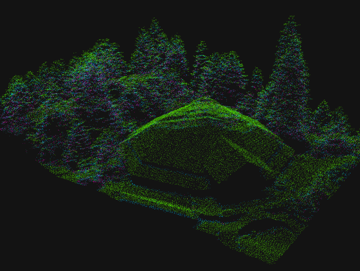

Maintaining Magnificence (Oregon Community Trees Conference 2016)
Leaflet and Spatial Data in R
Created for a quick introduction to Leaflet web mapping in R for colleagues.
Spatial Analytics in R
Created for a 1.5 hour presentation to the Portland State University chapter of the American Society for Photogrammetry and Remote Sensing (ASPRS).
Spatial Analytics in R (GIS in Action 2017)
A slight variation of the Spatial Analytics in R presentation, shortened to fit the time slot.
Maintaining Magnificence (Oregon Community Trees Conference 2016)
A 45min showcase of the data I have processed and the tools I have created to engage practitioners and community members with the Metro's urban forests.